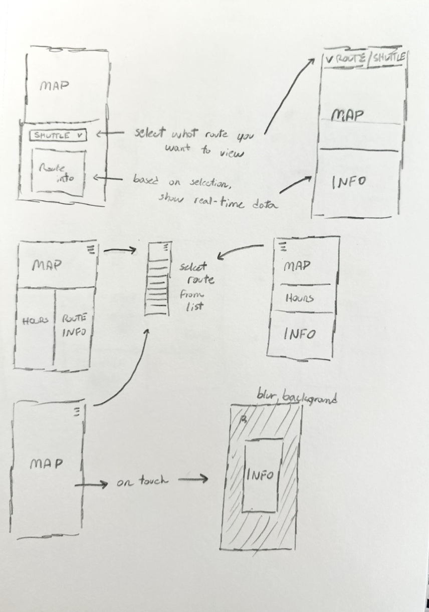
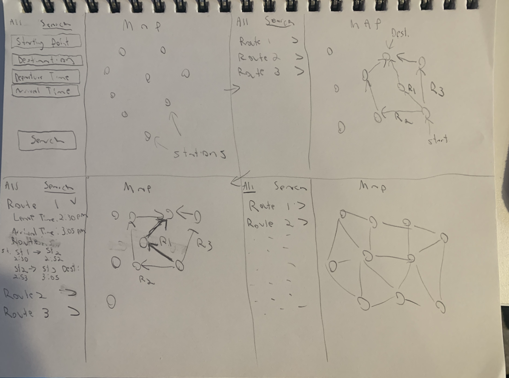
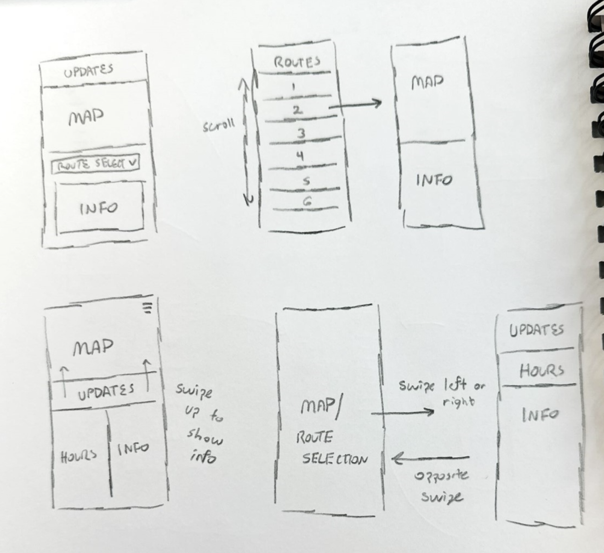
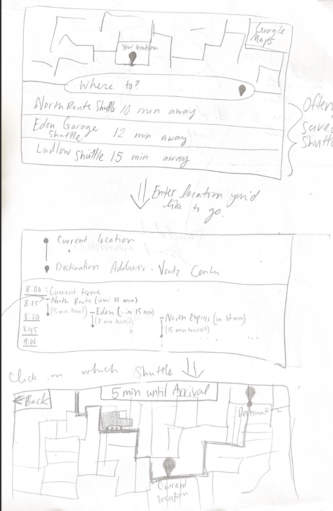
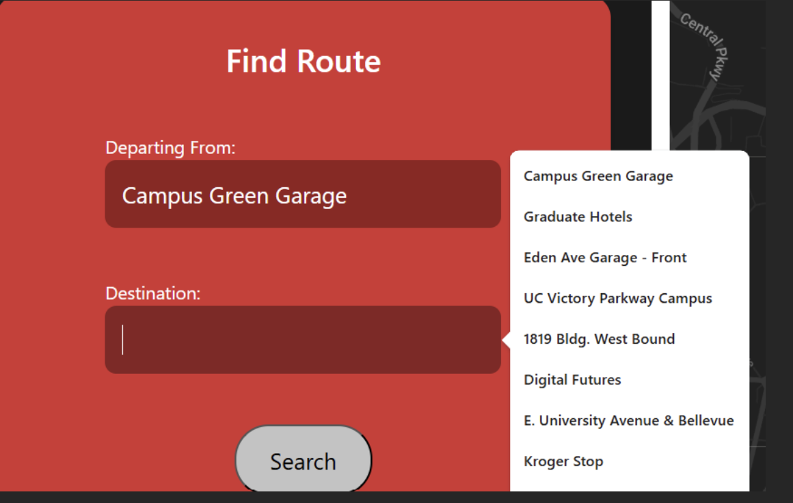
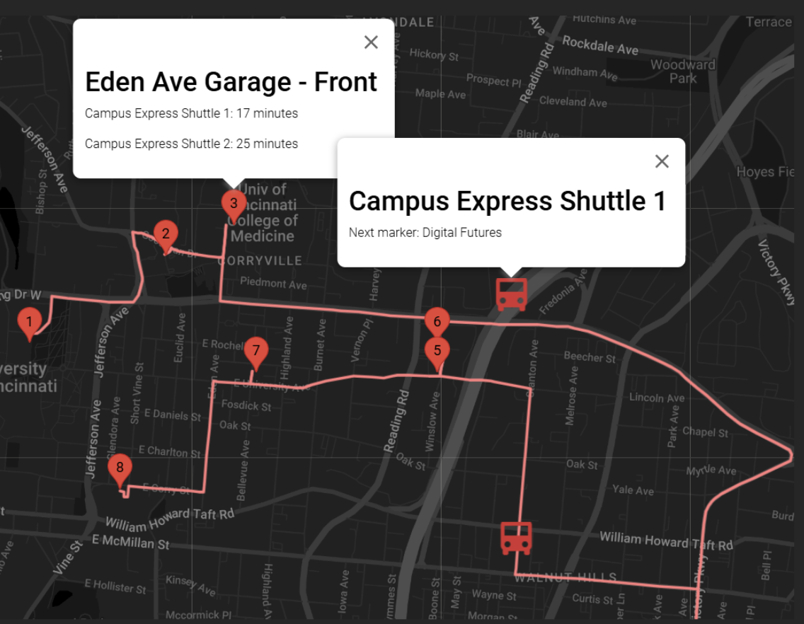
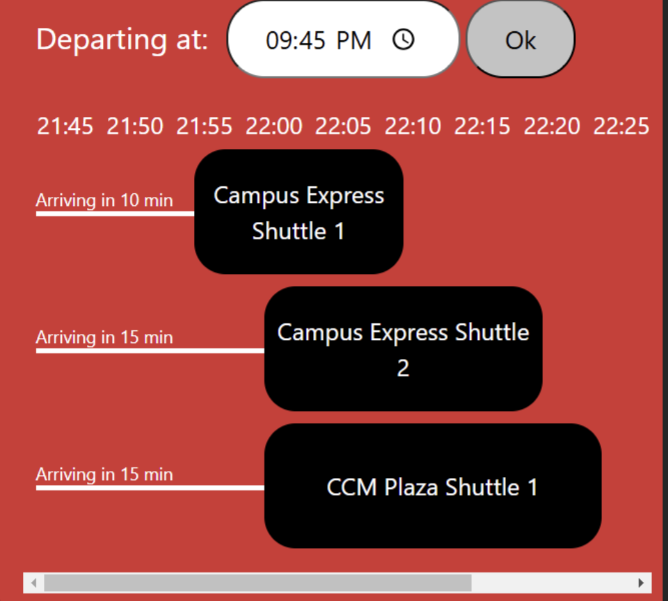

Redesign of the UC Shuttle Site
Contributors: Dylan Bok, Casey Jackson, Andrew Pipo, Kate Plas
Description of Project
This project was tailored around redesigning the UC Shuttle Application/Website, which is currently utilized to keep track of where the various shuttles are along their respective routes. Currently, the issues with the UC Shuttle Application were that it was difficult to view important information, including, but not limited to, specific route stops, operation hours, important announcements, and the state of if a shuttle was active. Additionally, there was functionality within the existing application that was bugged, including but not limited to filtering routes, toggling routes and clicking on specific icons/routes to view information. Our redesign focuses on ensuring that the overall layout was more user friendly and ensuring that relevant information was more presentable, which included our group adjusting the application layout to be more specific to a route and not showing all routes.
Design Work
For our design, we knew we needed to do two main things: simplify the map and add a more intuitive search feature for finding a route. Our interviews confirmed this:
Questions:
- What do you expect when using an app or website for public transportation?
- When using an app or website to track something in real-time, what is most important to you?
- Would you like delays, early arrivals, and cancellations to be clearly visible in the interface?
- Have you ever used the UC shuttle app or website?
- When looking at this image of the shuttle tracker, is there anything that appears unclear?
- When looking at this image of the shuttle tracker, is there anything you would want that’s not visible or easily accessible?
- When looking at this image of the shuttle tracker, is there anything you would remove?
Responses:
Below are the detailed responses from various interviews conducted by Dylan, Andrew, Casey, and Kate.
Dylan Interviews:
User 1:
- 1. I expect the app to actually show me a GPS or Google Maps-style map view of an area where I can clearly see streets, buildings, etc., and how to get to and from locations.
- 2. That whatever I am tracking is as accurate as possible so that I know when and where something or someone will arrive or be.
- 3. Yes, as knowing clearly if a usual route is unavailable. I do not want to have to waste time to find that information out. It should be clear and obvious.
- 4. No.
- 5. Yes, what are the triangles on the lines? Are they shuttles? If so, are they active or are they not? The colors are also not easy to identify, and it quickly becomes hard to figure things out when they overlap. I am also unsure of what the bubbles with the squares represent; are they stopping points?
- 6. Yes, times and schedules of the shuttles would be nice even in a generalized form. For example, if a Blue Ash shuttle is running in the afternoon, I want to know the standard times it will be running and the stops they will be making without having to try to figure out whatever is going on in that map, which is currently very messy.
- 7. Yes, besides things where I was already confused such as the bubbles and odd triangles (which I am sure have a purpose but it is currently unclear and needs to be redesigned or have a legend to figure out what means what), I would remove the satellite feature. A standard map works fine, and I see no reason why extra resources need to go into the function that likely very few people would ever use (it seems obsolete to me).
User 2:
- 1. Accuracy in schedule and tracking if available.
- 2. Accuracy of tracking, minimal delay.
- 3. Yes.
- 4. Yes.
- 5. The routes seem unclear, but that's only because they are stacked on top of each other. I know you can focus on just one at a time, though, and that gets the job done.
- 6. Estimated time until arrival at a certain stop.
- 7. The UC bar takes up space that could be used for viewing the map or selecting shuttle tabs.
Casey Interviews:
User 1:
- Input location leaving from, destination, and/or desired departure time to get the best bus routes.
- Actual accuracy in current location/movement in real time is important.
- Yes, especially if I search for a specific bus route. I want to see the delay amount and if it is canceled clearly and obviously.
- No.
- The coordination of the bus timetable with bus stops is unclear. Also, the bus icons are sometimes squares and sometimes arrows. I thought the square meant the bus was stopped, but it was moving while the square icon was set.
- The timing of the bus routes could be clearer, especially if only one route is visible.
- I would not show all bus routes initially. Instead, I would just show the map with bus stops, allowing users to select their starting location, destination, and departure time for the best route.
Andrew Interviews:
User 1:
- Real-time information on where the transit is located at and the schedule/timing of the route.
- Quick turnaround of updates that may be important to the user (i.e., updated routes, delays, timing) and accuracy of all information present.
- Yes.
- Yes.
- Where the shuttles are at, as well as what routes exist and where they go.
- Hours of operation, ETA, schedules.
- The UC Logo/Bar as it takes up too much space.
User 2:
- Easy to use, centralized application for routes and their schedules and stops/locations.
- Accuracy of present data with frequent updates.
- Yes.
- No.
- What shuttles are where and if they are active and the timing of when they will arrive at the next stop.
- Shuttle Operation Hours.
- UC Logo/Bar.
Kate Plas Interviews:
User 1
- What do you expect when using an app or website for public transportation?
I want to be able to use it like GoogleMaps. It would be nice if it told me how long I have to wait and when the bus would arrive.
- When using an app or website to track something in real-time, what is most important to you?
I want to see where the bus is and for it to update frequently.
- Would you like delays, early arrivals, and cancellations to be clearly visible in the interface?
Yes.
- Have you ever used the UC shuttle app or website?
Yes I have and it is horrible. I have to scroll around the map and manually determine where I am located and where I want to go, then cross-reference that to the shuttle routes.
- When looking at this image of the shuttle tracker, is there anything that appears unclear?
It is very cluttered. The routes are all automatically set to appear and it is very confusing.
- When looking at this image of the shuttle tracker, is there anything you would want that’s not visible or easily accessible?
I want to be able to tell it where I want to go and give me the optimal shuttle route.
- When looking at this image of the shuttle tracker, is there anything you would remove?
Yes. At the very least, I would remove the “Running” and “All” tabs because obviously I want to see what is running. Maybe could move those to a hidden options section.
User 2
- What do you expect when using an app or website for public transportation?
I expect to see where the shuttle I need is located.
- When using an app or website to track something in real-time, what is most important to you?
I like when the real-time tracking does not experience delays in updating.
- Would you like delays, early arrivals, and cancellations to be clearly visible in the interface?
Yes. Maybe a notification of an early arrival would be especially helpful.
- Have you ever used the UC shuttle app or website?
No I have not used it but have seen the interface.
- When looking at this image of the shuttle tracker, is there anything that appears unclear?
Yes. I don’t know why they would show all of the shuttles when I just want to tell it where I want to go.
- When looking at this image of the shuttle tracker, is there anything you would want that’s not visible or easily accessible?
Yes I want to give it my destination location and for it to determine for me what shuttle I should take.
- When looking at this image of the shuttle tracker, is there anything you would remove?
Not in particular because I think the whole thing needs a different configuration.
From there, we drew multiple sketches, from basic sketches to storyboard sketches, to try and get an idea of what our redesign should look like:




Combining these ideas expressed in our sketches, we settled on a final design plan for our interface. These are the primary things we decided to include in our redesign:
A map on the right side of the screen, like original page, but none of the routes are initially visible. This will make things less confusing for the user.
On the left side:
Shuttle info, including times of operation on the current day.
Search area, where a user can input a starting bus stop and destination bus stop and the map will then show the bus route to the desired location and the bus stops in between with more info when you click on each stop.
An area to show when the next bus will be arriving at your location.
From these sketches, we acquired feedback for the design ideas in order to gauge whether the redesign would address the issues in the UC Shuttle site. Feedback was largely positive, especially when compared to the UC Shuttle site’s display of the routes. The primary comment was that it seemed less cluttered and was much more visually appealing.
In addition to interviews, we also conducted background research. The Transit Mobile App used by Metro had a simple and effective format for displaying bus times. This structure was used to inspire the time table section of our interface. Other applications subject to background research were the airline apps. These often initially present the user with a query for where they would like to travel. Because of this finding, we ensured that the user was able to immediately see this part of the interface. These methods were implemented to advance our understanding and justification of the re-design.
These features will make up the basic design for our redesigned application, with more features potentially being added if there is time.
Interface in Detail
The hours section at the top left of the application displays the currently selected shuttle, alongside the current date, which is updated daily. Based on the current date (day of the week specifically), it will pull from locally saved data the hours for the specific day, that will also update daily. In addition, any announcements about the UC Shuttle system will display within the hours at the top as well for users to easily view as most announcements are relevant to operation hours or adjusted shuttle routes.

Below the hours section is the Find Route section. In this section, the user can input a starting location and a destination from a list of bus stops:

The user can then click the search button, and the map area on the right will display the bus route and all bus stops between the starting location and destination. The bus stops on the map can be clicked to show the name of the bus stop and when the next bus will arrive there. The map also shows bus icons that would represent the live location of that bus on the map. Clicking the icon displays the name of the bus and the next bus stop it is heading towards. In future work, we would add multiple routes, and the map would show switching buses to get to the desired bus stop.

Finally, below the Find Route section is the timetable section. Here, the user can view a sample timetable of the buses. Ideally, the user would use the time selector to select the desired departure time, and the timetable will update and show when each bus will arrive at the user-specified station. In future work, we would make this area more dynamic and give users more options.

Implementation
We utilized the Google Maps API to display a live map of the University of Cincinnati’s main campus,
to which it is a scaled-out view covering the campus and shuttle travel scope. Additionally, we utilized
the Svelte framework for the base website and hosted it on Vercel.
AI
AI was utilized to help develop and work out the issues with the Google Maps API/display as we attempted to have the map dynamically adjust to display routes and icons based on the user input.
We also utilized AI for general issue fixing with the overall container layout and design of each container.
Future Work
In the future, we aim to complete the implementation of all planned routes. Additionally, we intend to enhance the software with an intelligent routing algorithm that determines and displays only the routes relevant to the user’s chosen destination.
Alongside these route enhancements, we plan to implement a visual system designed to make distinguishing between visible routes intuitive and easy to understand at a glance. This visual system will improve the overall user experience by providing clear and concise route information, ensuring users can navigate seamlessly.